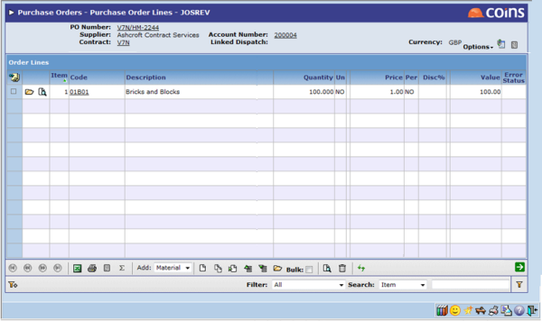
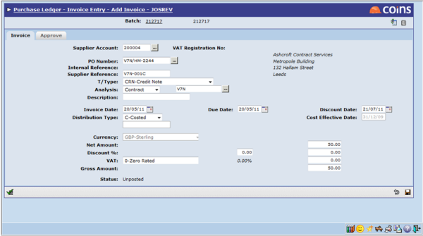
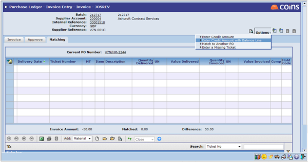
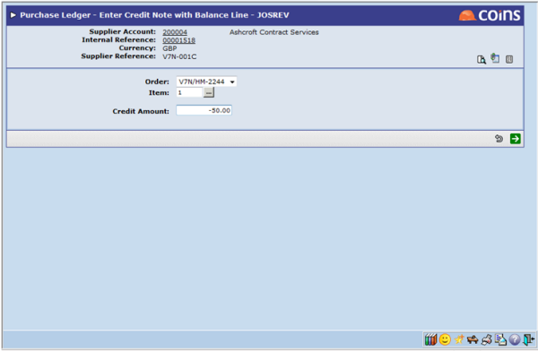
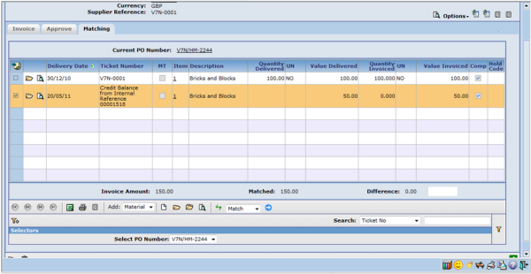

Processing a credit note (example):
- Raise an order for

- Invoice arrives for

- Request a credit note from the

- When entering the credit note, from the details screen select the Enter Credit Amount With Balance Line option.


- Return to the invoice and match it to the order and the credit balance line.

- You can now post the credit note and invoice.
